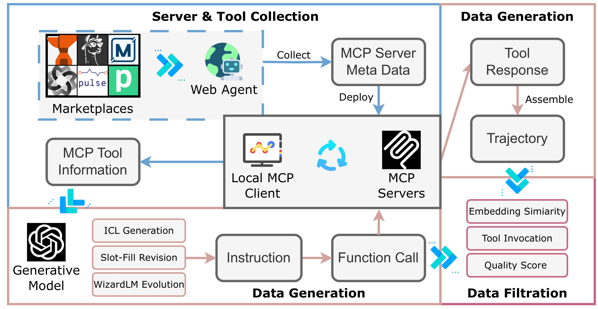
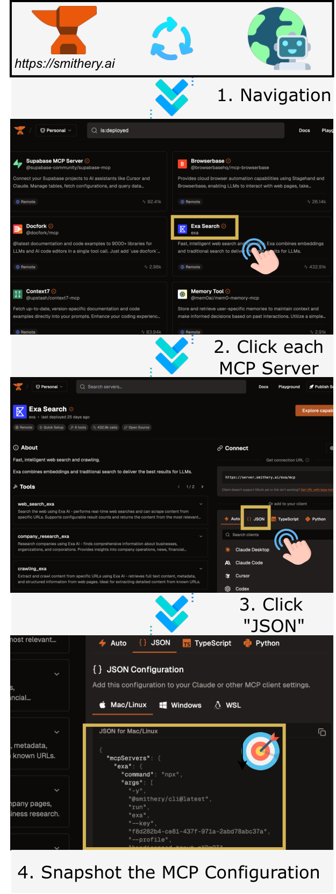
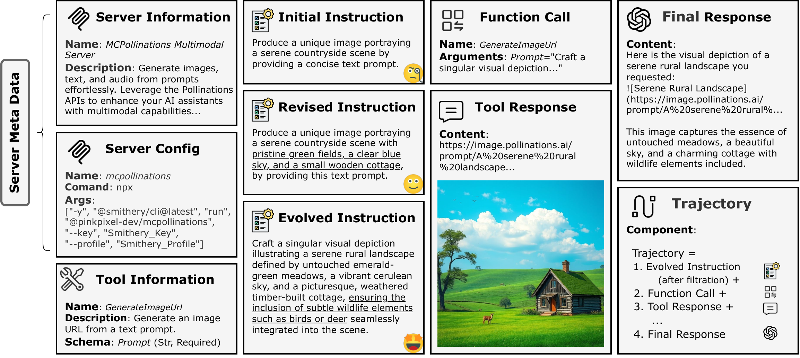
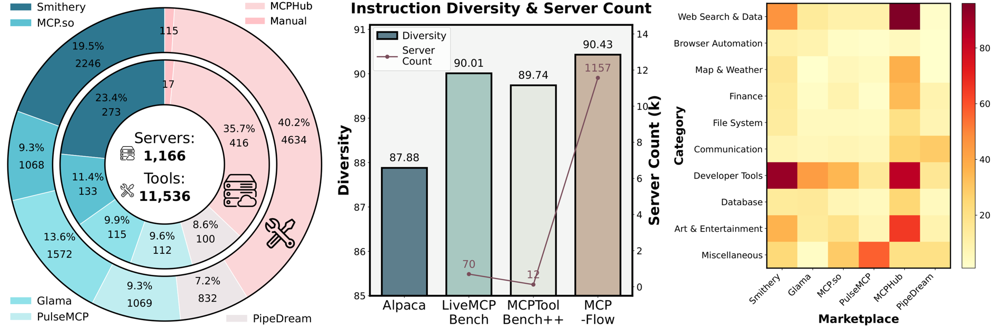
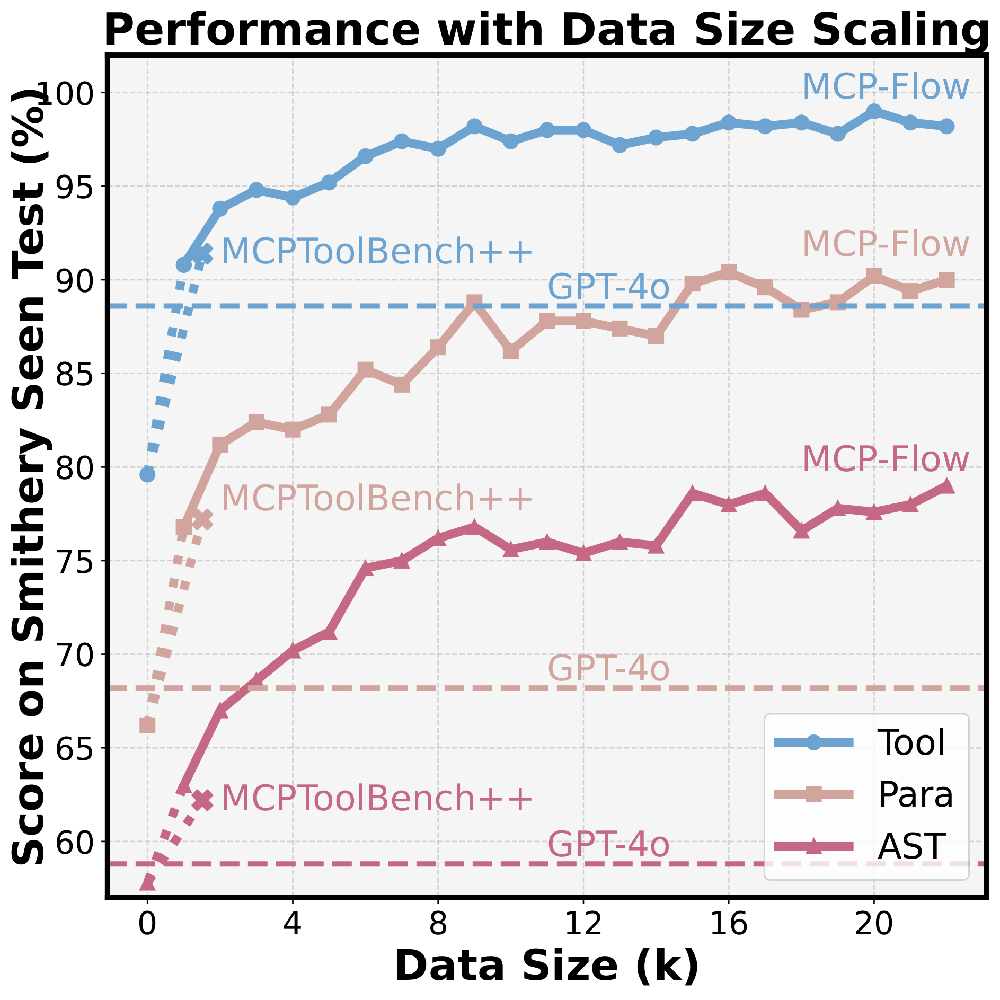

MCP-Flow：用 web agent 自动造数据，教 LLM 掌握真实、多样、可扩展的 MCP 工具
MCP-Flow: Facilitating LLM Agents to Master Real-World, Diverse and Scaling MCP Tools
①开源贡献 Open-source Artifacts
这是一篇 pipeline + 数据集 为核心的工作，开源程度较高：GitHub 放出采集/合成/训练/评测的代码骨架，完整数据集托管在 Hugging Face。下表链接均于解读日（2026-05-30）逐项核实。
| 类型 | 是否开源 | 内容 / 链接（核实情况） |
|---|---|---|
| 代码 Code | ✔ | github.com/wwh0411/MCP-Flow（标题标注 [ACL 2026 Main]，核实当日 ~21 star）。README 列出 ./src/（server 部署核心脚本）、./data/mcp_config/、./data/tools/、./data/function_call/、./data/trajectory/、./wizard_utils/ 与 requirements.txt。覆盖数据采集 → 合成 → 训练（基于 LLaMA-Factory）→ 评测链路。 |
| 数据集 Dataset | ✔ | huggingface.co/datasets/wwh0411/MCP-Flow（公开、非 gated，API 核实存在；约 2 GB，下载量数十）。字段含 instruction / function_call / conversations / tools / server_name / tool_name；按来源市场（smithery / glama / mcphub / mcpso / pipedream / deepnlp）组织，并含 test_data/（tool 数 5/10/20/30/40/100 的多档测试集）。 |
| 模型权重 Weights | ✘ | README 与论文均未提供微调后 checkpoint 的下载链接；需用开源 base model（Qwen3-0.6B/4B、Llama3.1-8B）+ 提供的脚本自行复现。 |
| 环境 / Benchmark | ✔ | 评测集（seen-test / unseen-tool / unseen-server 三档 + 不同 tool size）随数据集发布；采用 BFCL 的 AST 指标、并用 GAIA 评测 agentic 能力。评测代码在仓库内。 |
| License | 未标注 | GitHub README 与 HF 数据卡均未显式声明 license；HF metadata 也提示缺失。引用前建议向作者确认授权范围。 |
说明：arXiv v1 提交于 2025-10-28，v3 修订于 2026-04-16，被 ACL 2026 Main 接收。早期网络检索曾出现「license not specified」提示，本文如实标注为「未标注」而非臆测。
②研究动机与贡献 Motivation & Contribution
背景：MCP 是什么，为什么重要
Model Context Protocol (MCP) 是 Anthropic（2024）提出的开放协议，为 LLM 提供一套统一接口去发现、调用、组合外部 tool 与数据源。与「接口固定、灵活性有限」的传统 REST API 不同，MCP 提供一个动态、context-aware 的环境，让 LLM agent 能适配异构 server 与持续演化的功能。围绕 MCP 已经涌现出一批 marketplace（Smithery、Glama、MCP.so、PulseMCP、MCPHub、PipeDream 等），server / tool 数量爆炸式增长。
痛点：协议有了，但模型并不会用，且没有训练数据
作者指出：实证表明即便是 SOTA 模型也难以充分利用 MCP 工具（正文实验中 GPT-4o、Claude-4-Sonnet 在真实 MCP 上的 AST 准确率不足 60%）。如其 Table 1 所总结，现有 MCP 研究有三大局限：
- 覆盖少、靠人工 (limited coverage & manual curation)：多数工作只用 ≤20 个 server。例如 MCPToolBench++ 号称 4000 个 server 却只在 12 个上做实验；MCP-Zero 用 308 个 server 但只做「按位置检索」的简化任务，没有真实 user query。
- 采集跟不上生态增长 (not scalable)：现有 server 收集严重依赖人力或为每个站点手写爬虫代码，无法跟上社区里 MCP server 的快速涌现。
- 没有训练支持 (no training resources)：现有 benchmark 只能当评测平台用，无法把「评测发现的不足」转化为模型的实际提升——根因是缺少大规模、高质量的训练数据。
更深一层的对比是：传统 tool learning（ToolBench、ToolLLM、APIGen、ToolACE、Gorilla 等）要么是合成数据「不够真实、不可执行」，要么基于不稳定且无统一协议的 REST API；而 MCP 恰好提供了「接口标准化、但内容高度多样且高速增长」的独特环境——这正是 MCP-Flow 想对症下药的地方。
核心贡献
- 一条 web-agent 驱动的自动化 pipeline：能从各 marketplace 自动发现、采集、增量更新真实、多样、持续扩张的 MCP server，而不是人工维护列表。
- 一个大规模高质量数据集：覆盖 1166 server / 11536 tool（超过此前所有相关工作之和），含 68733 条 instruction–function call pair 与 6439 条 trajectory；同时支持训练、评测与 retrieval augmentation。
- 一套紧凑的微调模型与三种用法验证：(a) 训练小模型显著提升 MCP tool 选择与调用格式化；(b) 作为 retrieval database 增强不可微调的闭源模型；(c) 作为「playground」反过来评测 MCP server / tool 本身的质量与异质性。
③方法 Method
MCP-Flow 的数据构造分两大组件：server 发现（§3.1） 与 data synthesis（§3.2 生成 + §3.3 过滤），最终产出可训练的单轮 pair 与多轮 trajectory。下图是整体流程总览。

Stage 1：web-agent 自动采集 server 与 tool（§3.1）
用 web agent 而非传统爬虫。作者用 Playwright（一个 MCP-compatible 的 web agent）系统化浏览 Smithery、Glama、MCP.so、MCPHub、PipeDream、PulseMCP(DeepNLP) 等站点。在一个人工定义的 workflow 内，agent 自主导航到目标 server 页面，并通过 page snapshot 取回其 JSON 配置文件。关键优势：传统爬虫需要为每个站点的 HTML 结构写细致的解析逻辑，而该 agent 用高层指令操作、避免低级代码依赖，因而能跨平台泛化、易适配新市场；大规模采集后，后续只需对新发布的 server 做增量爬取，无需重跑全流程。

去重 (Deduplication)。同一个热门 server 常出现在多个站点（如 context7 出现在所有 endpoint）。作者发现区分 server 最可靠的标准不是名字或 provider，而是其 tool descriptions：若两个 server 的 tool 描述列表完全相同，就视为同一实体。
本地部署与 tool 抽取。用自研 MCP client（基于流行仓库 dolphin-mcp）本地部署 server：基于 stdio 的 server 通过 npm / uvx 部署，基于 SSE 的通过其 URL 连接。对每个成功部署的 server 抽取 tool 名称、描述与参数（input schema）。需要 API key 或专有软件的 server 因敏感与部署约束被排除（作者把它列为 future work）。最终 1166 个 server 都有 tool 信息与生成的 function call，但只有 356 个能产生 valid response 与 trajectory（即 6439 条 trajectory 来自这 356 个真正可执行的 server）。
Stage 2：大规模 data synthesis（§3.2 生成）
这一步从「tool 的静态描述」造出「可训练的样本」，由若干环节串成：
- Few-Shot Generation（ICL 生成）。为保证有 ground-truth 标签，作者从 tool 视角出发：对每个 tool 基于人工示例生成 5 条不同 instruction，且都必须用到该目标 tool——天然得到「instruction ↔ 正确 tool」配对。
- Slot-Fill Revision（槽位填充修订）。把 tool 要求的每个参数当作一个 slot；若原 query 没提供，就自动生成一个合法值并改写 query 使其通顺。仍残留占位符的，用专门的正则规则（§D.3）检测并替换为本地预收集的候选值。这一步确保所有必填参数都被指定。
- WizardLM Evolution（指令进化）。采用 Xu et al. (2023) 的 evolution 方法提升 instruction 的复杂度与多样性：为每条 query 随机选一个进化方向（如 concretization 或 reasoning），evolution depth 设为 2 以平衡成本与质量。
- Function Call Generation。给定 ground-truth tool、其 input schema 和对应 instruction，用 GPT-4o 生成形式化的 function call（对强模型而言这一步没有干扰因素、较直接），再交给后续过滤把关正确性。
- Tool Response Collection & Trajectory。根据 function call 通过本地 client 与 MCP server 通信取回 tool response，assistant 再总结结果生成 final response；把「(过滤后的) instruction + function call + tool response + final response」拼起来即一条完整 trajectory。

Stage 3：严格过滤（§3.3）
质量的关键在三道过滤，依次为：
- Embedding Similarity Filtration。有些 instruction 与 tool description 过于相似，会让 tool selection 变得 trivial。作者计算 instruction–description 的 embedding 相似度，阈值 0.8，超过即丢弃（embedding 用
mxbai-embed-large-v1）。 - Tool Invocation Filtration。为校验 ground-truth 标签可靠性，让 GPT-4o 与 DeepSeek-V3 从「标注 tool + 2 个随机候选」里选正确 tool；两个模型在这种简化设定下都选错的样本被丢弃。结果只剔除极少量，反证标注质量高。
- Quality Score Filtration。用与生成器不同的 DeepSeek-V3 作为 judge（LiveMCPBench 表明它与人工标注高度一致）给 instruction 与 function call 打分，低于 6/10 的丢弃。
数据质量的人工核验（原文 Table 5）：对 300 条随机样本（每个 split 100 条、双人标注），Correctness（ground-truth tool 是否为 10 个候选中的最优）平均 >96%（seen 99.0 / unseen-tool 96.0 / unseen-server 97.25），Correlation error（任务是否真的需要用工具）≤2.5%——说明过滤管线确实产出了高质量、可靠的数据。
- 训练框架：LLaMA-Factory；小模型用 LoRA（rank 16 / alpha 32），DeepSpeed ZeRO stage 0，BF16。注意：本文只做 SFT/LoRA，没有用 RL。
- 训练超参：learning rate 5e-5，cosine scheduler，warmup ratio 0.1，gradient accumulation 8，max length(in+out) 8192。默认只训 1 epoch 防过拟合（消融里也有 2 epoch）。
- 数据 split（防泄漏）：每个 marketplace 先按 server 12:1 划出 unseen-server；在剩余 seen server 内按 tool 11:1 划出 unseen-tool；其余再按 10:1 分 train / seen-test。共 6 marketplace × 4 split = 24 子集。
- 训练 tool size：默认每条样本配 10 个候选 tool（从 seen tool pool 随机采）；另做了 tool size = 5/10/.../100 的消融。
- 角色分工：生成器 = GPT-4o；judge / 标签校验 = DeepSeek-V3；被训练的是开源小模型 Qwen3-0.6B/4B、Llama3.1-8B。
- 硬件：8×H100；推理用 vLLM。Qwen3-4B 全量 function-call 数据训 2 epoch 约 12 小时 / 2 GPU。采集成本：爬 100 个最新 server 约 2 美元（单 server ≈¢24.87）。
④实验评估 Evaluation
评测设置
- 测试 split：
seen-test/unseen-tool（来自见过的 server，但 tool 没见过）/unseen-server（整个 server 没见过），分别考察记忆与泛化。 - 指标（严格度递增，越高越好，%）：Tool = tool 选择准确率；Param = 参数格式准确率（递归比对所有 ground-truth 参数名，all-or-nothing，少一个就算错，不要求顺序）；AST = 取自 BFCL 的抽象语法树匹配（函数名精确匹配且所有参数值落在允许集合内，作者称其与真实执行结果高度一致）。agentic 任务用 SR（GAIA 成功率）与 WS（Weighted Step，按 token 价格加权的步数 / 成本，越低越好）。
- baseline：大模型 GPT-4o / GPT-4.1 / Claude-4-Sonnet / Gemini-2.5-Pro / DeepSeek-V3 / Kimi-K2（Azure API）；小模型 Qwen3-0.6B/4B/8B、Llama3.1-8B；tool-specialized 的 Groq-8B-Tool-Use、ToolACE-8B；以及在另一数据集 MCPToolBench++ 上微调的对照。
主结果之一：训练小模型（原文 Table 2，候选 10 个 tool）
下表为各 split 上的 Tool / Param / AST。加粗为本文方法（MCP-Flow 微调）。
| 模型 | Seen Test | Unseen Tool | Unseen Server | ||||||
|---|---|---|---|---|---|---|---|---|---|
| Tool | Param | AST | Tool | Param | AST | Tool | Param | AST | |
| GPT-4o | 88.6 | 68.2 | 58.8 | 85.0 | 71.4 | 62.0 | 81.4 | 55.6 | 50.8 |
| Claude-4-Sonnet | 85.8 | 68.6 | 56.6 | 83.0 | 74.4 | 63.6 | 72.6 | 56.0 | 48.4 |
| Gemini-2.5-Pro | 54.2 | 42.8 | 36.8 | 55.4 | 50.6 | 42.4 | 49.6 | 38.0 | 32.2 |
| DeepSeek-V3 | 84.2 | 67.2 | 58.8 | 82.0 | 70.8 | 59.8 | 77.6 | 55.6 | 48.8 |
| Kimi-K2 | 85.6 | 68.0 | 55.0 | 82.4 | 73.0 | 60.2 | 74.4 | 53.0 | 47.4 |
| Qwen3-4B (base) | 79.6 | 66.2 | 57.8 | 81.8 | 75.4 | 65.4 | 74.8 | 55.2 | 46.8 |
| Qwen3-8B (base) | 83.6 | 69.6 | 59.6 | 86.0 | 76.4 | 65.6 | 76.4 | 57.2 | 48.2 |
| Llama3.1-8B (base) | 75.8 | 55.0 | 32.4 | 74.0 | 53.6 | 33.8 | 74.8 | 55.8 | 33.2 |
| ToolACE-8B | 89.4 | 49.8 | 45.6 | 83.4 | 49.0 | 44.4 | 88.4 | 51.8 | 46.0 |
| MCPToolBench++ · Qwen3-4B | 91.4 | 77.2 | 62.2 | 91.6 | 76.0 | 63.0 | 80.4 | 57.2 | 47.6 |
| MCP-Flow · Qwen3-0.6B | 96.8 | 87.2 | 75.4 | 98.2 | 86.8 | 75.2 | 98.4 | 70.6 | 58.0 |
| MCP-Flow · Qwen3-4B | 99.2 | 91.8 | 81.2 | 98.6 | 91.4 | 78.2 | 98.4 | 72.2 | 59.8 |
| MCP-Flow · Llama3.1-8B | 98.6 | 91.0 | 81.6 | 99.0 | 91.2 | 77.6 | 99.4 | 77.0 | 65.2 |
怎么读这张表（老实评估）：
- 小模型全面反超大模型。仅 0.6B 的 MCP-Flow 模型在所有 9 个指标上都已超过 GPT-4o / Claude-4-Sonnet（如 seen AST 75.4 vs GPT-4o 58.8 / Claude 56.6）；4B / 8B 进一步把 Tool 拉到 ~99、AST 到 ~80+。说明在「用 MCP 工具」这个垂直能力上，对症的数据比更大的通用模型更管用。
- 提升集中在难指标。base 模型的 Tool 起点本就不低（75～86），真正拉胯的是 Param / AST；MCP-Flow 补得最多的也正是这两项——例如 Llama3.1-8B 的 seen AST 从 32.4 → 81.6（+49 点）。直觉：模型「大概知道选哪个工具」，但写不对完整调用、填不对参数，而这恰是数据补齐的部分。
- 泛化是真的。unseen-server 最难（几乎所有模型都掉分），但 MCP-Flow 模型在 unseen-tool / unseen-server 上仍大幅高于 backbone，且 unseen-tool 因与 seen 共享 server 而接近 seen-test。
- 数据规模/质量优于同类。同样做 MCP 数据的 MCPToolBench++ 数据质量相当，但规模与覆盖有限，微调收益明显小于 MCP-Flow（如 seen AST 62.2 vs 81.6）。tool-specialized 的旧模型（ToolACE-8B 基于传统 API；Groq-8B-Tool-Use 常输出「I can't help」）在真实 MCP 上也不行。
主结果之二：候选 tool 暴增到 100（原文 Table 3，三 split 平均）
| 模型 | Tool | Param | AST |
|---|---|---|---|
| GPT-4o | 72.3 | 66.9 | 53.8 |
| Claude-4-Sonnet | 68.3 | 63.3 | 51.6 |
| Qwen3-4B (base) | 61.7 | 59.8 | 49.0 |
| Groq-8B-Tool-Use | 2.9 | 1.4 | 1.3 |
| ToolACE-8B | 60.9 | 51.9 | 35.9 |
| MCP-Flow · Qwen3-0.6B | 64.7 | 63.4 | 51.6 |
| MCP-Flow · Qwen3-4B | 81.7 | 82.1 | 67.0 |
候选从 10 增到 100，所有模型都掉分（干扰更大、更难），但 MCP-Flow-Qwen3-4B 仍以 81.7/82.1/67.0 大幅领先 GPT-4o（72.3/66.9/53.8）；Groq-8B-Tool-Use 直接崩到 ~3%。这印证了正文论点：候选 tool 越多，SOTA 大模型退化越明显，而 MCP-Flow 训练出的模型更稳健（消融也显示「用更大 tool size 训练」对大候选集更鲁棒）。
用法二：RAG 增强闭源大模型（原文 §4.2 / Figure 4）
对无法微调的闭源模型，把数据集当 retrieval database：收到 user instruction 后用 Sentence-Transformers embedding + Faiss 检索 top-5 最相似样本拼进 system prompt（类似 RAG）。结论：(1) 加入检索到的 function-call 范例一致地提升模型表现（在 Smithery 上 GPT-4o、Claude-4-Sonnet 多个指标 +2～+6 点）；(2) Claude-4-Sonnet 增益大于 GPT-4o（可能因其更强推理）；(3) 即便加了检索，这些大模型在 unseen-server 上仍不及微调后的小模型——再次印证小而专模型的价值。
用法三：在 GAIA 上增强 agent（原文 Table 4）
| Backbone | 方法 | SR（成功率） | WS（加权步数/成本，↓） |
|---|---|---|---|
| Qwen3-4B | Base | 10.68 | 1.88 |
| Qwen3-4B | +MCP-Flow | 21.36（+100%） | 2.01（−7%） |
| GPT-4o | Base | 29.13 | 3.07 |
| GPT-4o | +MCP-Flow | 33.98（+17%） | 1.92（+32% 省） |
| Claude-4-Sonnet | Base | 55.34 | 6.01 |
| Claude-4-Sonnet | +MCP-Flow | 57.28（+4%） | 5.29（+12% 省） |
做法是用 MCP-Flow 模型生成 agent 的「首个 function call」，之后交回原 agent 继续。提升来自两点：(1) 提高调工具倾向——Qwen3、GPT-4o 常「偷懒」只用内部知识答题（易过时/幻觉），用 MCP-Flow 起步能把 agent 引上更有效的工具交互路径（Qwen3-4B 成功率直接翻倍 10.68→21.36）；(2) 过滤掉不可用 server，减少无效尝试。同时多数情况下还降低了整体成本（WS 下降）。诚实地说：对本已很强的 Claude-4-Sonnet 增益较小（+4%），收益与 backbone 自身能力相关。
关键消融与分析


- Scaling law（Figure 5c / §4.4）：性能随数据规模增长；Tool 指标最先饱和（接近 100%），AST 仍有提升潜力——说明「调用结构正确」是更难、更吃数据的目标。相比 MCPToolBench++，MCP-Flow 既「涨得更快」又「规模更大」。
- 跨市场对比（Figure 5a）：各平台上 MCP-Flow 都稳超 baseline；MCPHub / Glama 比 Smithery 更难（含更多冷门 server，模型见得少更难预测），但市场间差异不至于构成严重的 data heterogeneity（各市场都聚合了大规模多样 server，分布大体可比）。
- 候选 tool size（Figure 5b）：测试时候选越多、性能越低（干扰更大）；用更大 tool size 训练的模型对大候选集更鲁棒。
- 一个有意思的发现（§B.5）：部分 MCP.so 的 server 缺乏严格符合 OpenAI tool-calling 协议的 tool description，导致大 API 模型在 MCP.so 上反而比带 reasoning 的小模型更差——提示 agent 面对「不规范 MCP 工具」时的鲁棒性是个真问题。
⑤洞见 Insights
- 「会用工具」的瓶颈不在选工具，而在写对调用、填对参数。base 模型 Tool 起点不低，真正差的是 Param/AST；MCP-Flow 的增益也集中在这两项（Llama3.1-8B 的 AST +49 点）。做 tool-use 训练应把数据/目标重点压在「完整、合法、参数正确的 function call」，而不只是「选对工具」。
- 数据「真实 + 可执行 + 多样」胜过「单纯堆量」。execution 校验（tool invocation 过滤）、schema 化的 slot-fill、以及覆盖 6 市场 10 品类的多样性，是 MCP-Flow 区别于 ToolBench/ToolACE（不可执行）的根本；同等规模下它比 MCPToolBench++ 涨得更快。对真实工具生态，「能跑通、品类广」是性价比最高的投资。
- 「用 agent 造数据、再训 agent」是应对快速膨胀工具世界的可扩展范式。用 VLM/web agent 自动爬 marketplace、自动抽 schema、自动 execution-validate，相比人工维护静态 API 列表可随生态增长持续扩充（增量爬 100 server 仅 ~2 美元）。这套闭环是本文最有想象力之处，也解释了它为何能「规模超过此前所有相关工作之和」。
局限与未来（作者自述 + 解读判断）
- 数据会过时、依赖 live server。采集与 execution 校验依赖真实 server 的实时可用性；server 可能因连接/配置问题失效，或随时间被弃用、功能退化，影响数据集长期可靠性。
- 合成数据 vs 真实用户行为存在固有 gap。合成任务难以完全还原真实用户那种杂乱、不可预测的行为——这是所有合成数据 pipeline 的通病。
- 偏单轮。作者明确指出 MCP-Flow 当前以单轮 tool-invocation 数据为主，可能不足以覆盖需要迭代推理、context-aware 决策的多轮 agentic workflow（这也与 GAIA 上对强 backbone 增益有限相印证）。
- 未覆盖需 API key / 专有软件的 server，也未处理 adversarial server。作者把「扩展到这两类 server」与「检测恶意/被投毒的 MCP server」列为重要 future work——后者在公开 marketplace 上是现实安全隐患。
与相关工作的关系（仅据本文论述）
本文处在三条线的交叉：(a) tool learning（ToolBench/ToolLLM/APIGen/ToolACE/Gorilla）——但前作要么合成数据不真实/不可执行，要么依赖不稳定的 REST API；(b) MCP benchmark（MCPBench、MCP-Universe、LiveMCPBench、MCP-Zero、MCPToolBench++、InfoMosaic-Bench 等）——它们多为「只评测、不训练、server 少、靠人工」，本文补上了缺失的大规模可执行训练数据 + 自动化采集；(c) web/GUI agent——本文把 web agent 创新性地用作「数据采集器」。三者结合成「web agent 采真实数据 → 生成+三道过滤 → LoRA 微调小模型 → seen/unseen 评测 + RAG 增强 + GAIA」的完整闭环。